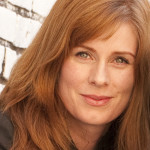

A faculty member of Central Washington University since 2011, Dr. Melissa Schiel is an Assistant Professor of Voice. In addition to Applied Voice, she teaches Diction and Vocal Pedagogy.
Schiel is a member of the National Association of Teachers of Singing (NATS). In 2011, she was a participant of the first symposium on “Semi-occluded vocal tract voice therapy and diagnostic techniques,” sponsored by the National Center of Voice and Speech and the University of Utah. In 2010, she was chosen to participate in the NATS Internship Program at Stetson University. A passionate and energetic teacher, she received the 2009 Award for Teaching Excellence for her work at the University of Maryland.
On the stage, Schiel has performed with numerous opera companies and opera theater centers including: Vashon Opera, Opera Ontario, Aspen Opera Theater Center, Tanglewood Music Center, the Boris Brott Festival and the Mountain View International Festival of Song. A uniquely versatile musician, Schiel has performed a broad spectrum of repertoire. Her operatic roles include: Dorabella (Così fan tutte) Olga (Eugene Onegin) Oberon (A Midsummer Night’s Dream), The Fox (The Cunning Little Vixen), Maddelena (Rigoletto), Zita (Gianni Schicchi), Dinah (Trouble in Tahiti), Dritte Dame (Die Zauberflöte), The Old Lady (Candide) and Mrs. Herring (Albert Herring). Consistently seeking to champion the works of contemporary composers, Schiel has premiered several works including the role of Estelle Oglethorpe in Later the Same Evening: a 2007 opera by John Musto inspired by art of Edward Hopper in collaboration with the National Gallery of Art.
Schiel has also performed numerous oratorio works including: Verdi’s Requiem, Handel’s Messiah, Bruckner’s Te Deum, Beethoven’s Symphony No.9, and Bach’s Christmas Oratorio. Passionate about early music, Dr. Schiel enjoys collaboration with Musica Antiqua at CWU. A lover of lecture recitals, her DMA recital “Good Old Durastanti: Actress, Singer and Maid of All Work,” was the culmination of her research of famed Handel singer Margherita Durastante. In 2010, Dr. Schiel presented a series of lecture recitals at several universities throughout the Pacific Northwest to commemorate the 100th Anniversary of Women’s Suffrage in Washington. “Women and Song – No Wine Required,” presented the works of some of the most prolific female art song composers including Cecile Chaminade, Rebecca Clarke, Alma Mahler, Carrie Jacob Bonds, Pauline Garcia Viardot, and Clara Schumann.
Schiel received her Doctor of Musical Arts in Voice Performance from the University of Maryland; a Master of Music in Voice Performance from University of Toronto; and, a Bachelor of Music, Distinction in Voice from McGill University